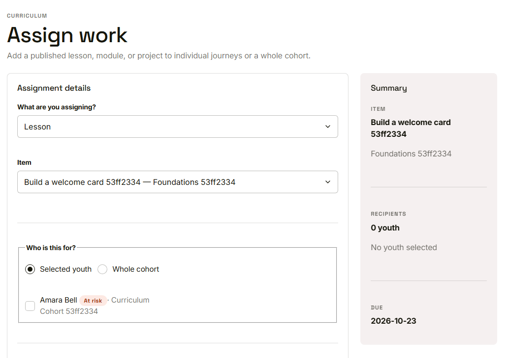
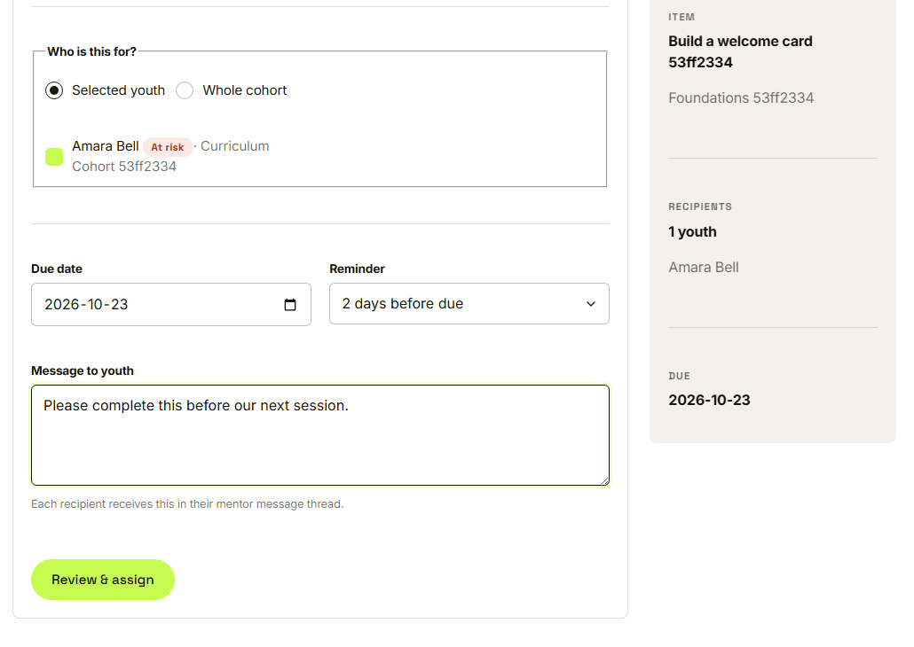
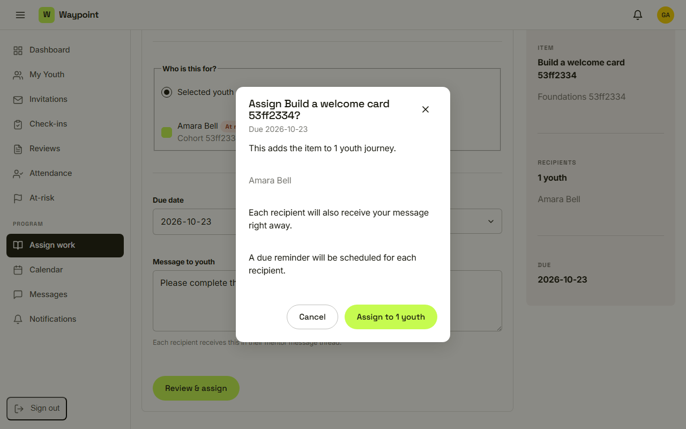

Waypoint · Video 053
Assigning work
One youth, several youth, or a whole cohort
Choose the item

A type and an item are required
Who, when and a message

Recipients, due date, reminder and message
Nothing is created until she confirms

The confirmation window
Things to remember
Pick a type and an item, then selected youth or the whole cohort
Add a due date, a reminder and a message
Nothing happens until the mentor confirms
Each recipient gets it in their journey, and the count is reported